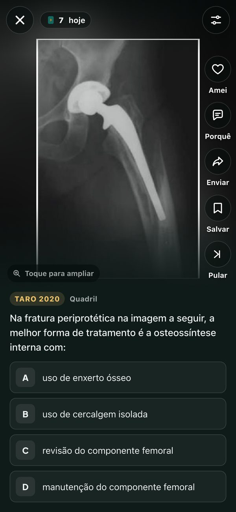
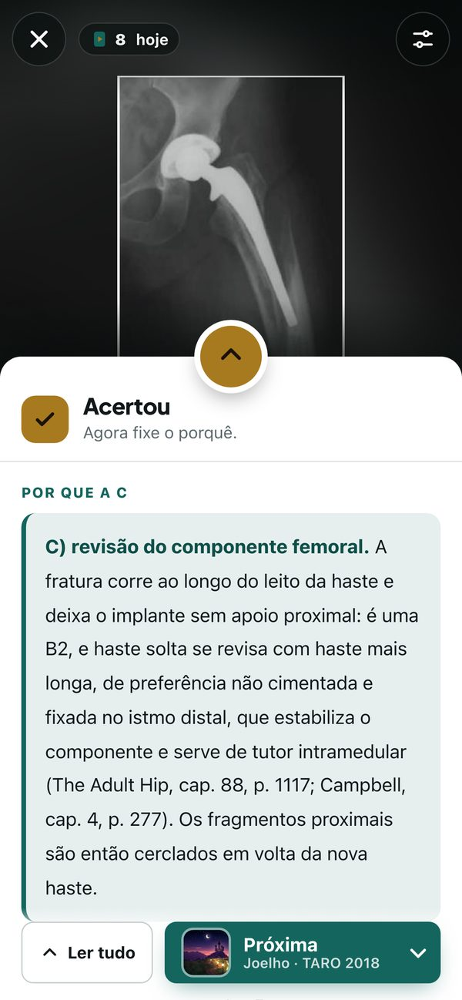
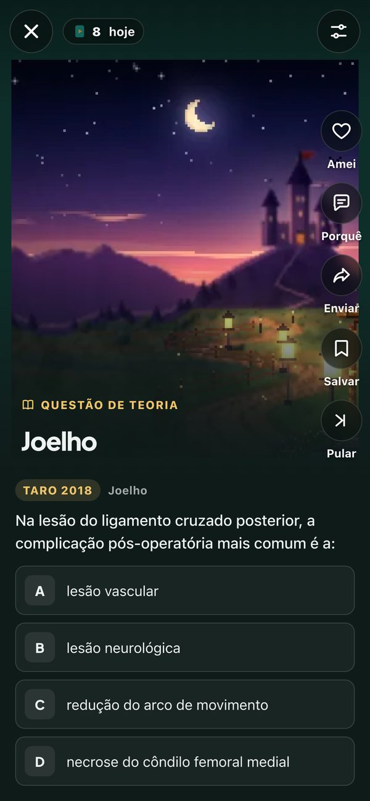
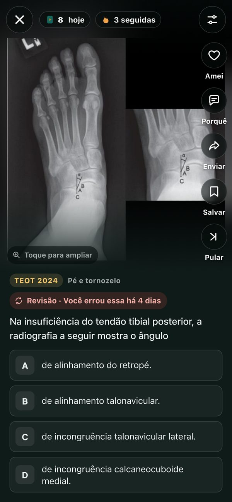
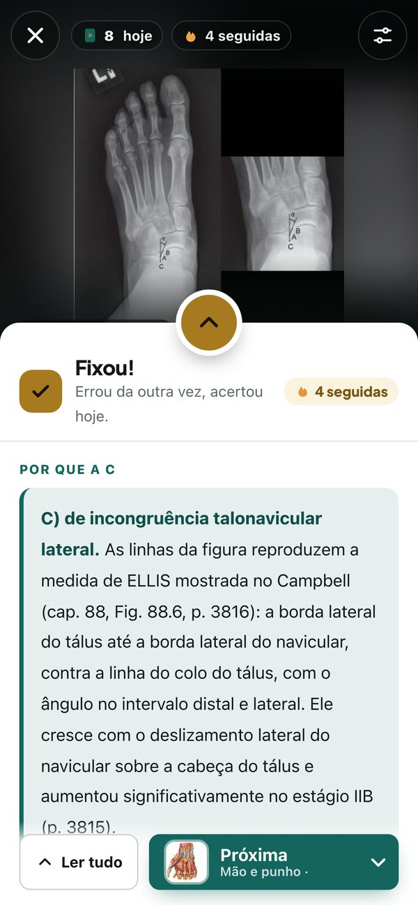
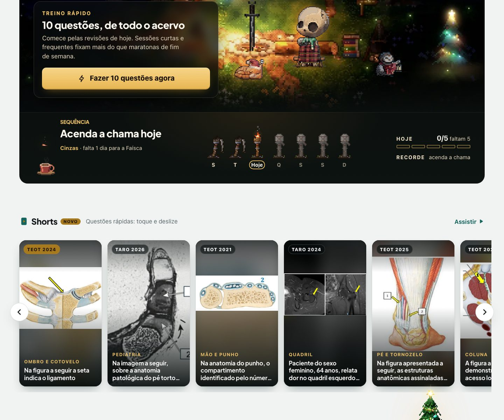

Questões de ortopedia no formato TikTok
Todo residente conhece a cena: dez minutos livres, o celular na mão e, sem perceber, o dedo rolando um vídeo atrás do outro. Os Shorts de questões usam esse mesmo gesto a favor do estudo. Em vez de vídeos, o que passa na tela são questões de ortopedia de prova, uma de cada vez, em pé, com a imagem grande no alto.
É o que muita gente procura como TikTok de questões: questões rápidas, que dá para resolver em um minuto, sem montar sessão, escolher filtro ou abrir o computador. Abriu, respondeu, entendeu, deslizou.


Como funciona o treino rápido, passo a passo
- Toque na resposta. A certa acende em dourado; se você errou, a sua fica em vermelho e a certa aparece.
- Leia o porquê. O comentário sobe na hora, numa gaveta: primeiro a frase que explica a certa, depois a explicação completa e o porquê de cada alternativa errada, com a referência do livro.
- Dê o coração. Gostou do comentário? Dois toques na imagem e ele ganha um coração.
- Deslize para a próxima. Quando você acerta, a próxima vem sozinha em poucos segundos, com um som baixinho de recompensa. Quando erra, o comentário espera você ler.




Por que questões rápidas fixam o conteúdo
Ler e reler dá a sensação de aprender. Tentar lembrar a resposta é o que faz lembrar no dia da prova. Esse efeito, chamado de estudo ativo, é um dos mais estudados em educação médica, e é o que está por trás de cada Short. Explicamos a ciência no guia Como estudar por questões.
Três escolhas do formato puxam nessa direção:
- Mais questões com imagem. O sorteio dá mais chance a radiografias, ressonâncias e fotos clínicas, porque ler imagem é o que mais pesa na prova de ortopedia. Para treinar o olho com calma, veja também Radiografias e classificações de ortopedia.
- Pouco tempo por questão, muitas vezes por dia. Blocos curtos e frequentes, nos intervalos, rendem mais do que uma maratona no fim de semana.
- Assuntos misturados. Uma de joelho, outra de mão, outra de coluna: misturar obriga a reconhecer o tema antes de responder, como acontece na prova.
A revisão surpresa: a questão que você errou volta
Errar faz parte; o que importa é o erro voltar. Nos Shorts, depois que você responde, a questão pode reaparecer de 3 a 7 dias depois, sem aviso, no meio do treino. Ela vem marcada ("Você errou essa há 4 dias") e com as alternativas em outra ordem, para você raciocinar em vez de lembrar a letra. Acertou desta vez: fixou.




Onde encontrar os Shorts no site
Logo na página inicial, abaixo da arte, fica a prateleira de Shorts, como a do YouTube: capas com a imagem de cada questão, uma do lado da outra, que mudam a cada vez que você abre o site. Toque numa e o treino começa.


Os Shorts também estão no menu de baixo do celular, no quadradinho "Faça Shorts" do menu do site e na página Treinar, ao lado da sessão rápida. Por padrão, as questões são do TEOT e do TARO; na engrenagem, dá para incluir Cirurgia da Mão e outras provas, pedir só questões com imagem ou só as que você ainda não fez.
Os Shorts e o seu curso de ortopedia
Quem está na residência em ortopedia costuma procurar um curso de ortopedia para organizar a teoria, e isso é bom: a aula e o livro são onde você encontra o assunto. Os Shorts não substituem o curso. Eles fazem o que o curso não faz sozinho: transformar o que você viu em resposta certa, com treino rápido e frequente, e trazer de volta o que escapou.
Um jeito simples de usar os dois juntos: assistir à aula ou ler o capítulo no dia de folga e, nos intervalos da semana, deslizar pelos Shorts. Quando quiser treinar um tema inteiro, a página Treinar monta a sessão do seu jeito. Para o plano do primeiro ano, leia Curso de ortopedia R1: como estudar do primeiro ano ao TEOT e R1 de ortopedia: o que estudar no primeiro mês.
Para quem são as questões rápidas
- R1, R2 e R3 da residência de ortopedia, que estudam entre plantões, ambulatório e centro cirúrgico.
- Quem vai fazer o TARO durante a residência ou o TEOT no fim dela e quer manter o ritmo todos os dias.
- Quem já estudou o tema e quer revisar rápido, com questões de ortopedia comentadas.
- Residentes de Cirurgia da Mão, ligando a prova de mão nos ajustes.
Sem conta, dá para olhar as questões à vontade. Com a conta grátis, você responde 5 Shorts por dia com o comentário completo; na assinatura, os Shorts não têm limite. Cada resposta conta no seu desempenho do site.
Perguntas frequentes
Existe TikTok de questões de ortopedia?
Sim. Os Shorts do Orto Questões funcionam como um TikTok de questões de ortopedia: uma questão por tela, em pé, no celular. Você toca na resposta, o comentário explica o porquê na hora e você desliza para a próxima.
As questões dos Shorts são de provas oficiais?
Sim. Os Shorts sorteiam as questões do próprio Orto Questões, com o TEOT e o TARO como padrão, e todas têm comentário. Nas configurações dá para incluir Cirurgia da Mão e outras provas de ortopedia.
Dá para usar os Shorts de graça?
Sim. Sem conta, você vê as questões. Com a conta grátis, responde 5 Shorts por dia, com o comentário completo. Na assinatura, os Shorts não têm limite.
Os Shorts substituem um curso de ortopedia?
Não. O curso de ortopedia e a bibliografia são onde você encontra a teoria. Os Shorts são o treino rápido que fixa: aproveitam os intervalos do dia com questões de prova comentadas e trazem de volta, de surpresa, o que você errou.
Os Shorts servem para a residência em ortopedia e para o TEOT?
Servem. As questões vêm das provas que a residência em ortopedia cobra, como o TARO durante o R1, o R2 e o R3 e o TEOT no fim, e cada resposta conta no seu desempenho do site.
Questões de ortopedia com imagem aparecem nos Shorts?
Aparecem mais do que no treino comum: o sorteio dá mais chance às questões com raio-X, ressonância, tomografia e fotos clínicas, porque a leitura de imagem é o que mais pesa na prova.
Experimente agora: uma questão, um toque
Abra os Shorts, responda a primeira questão e veja o porquê subir na hora. Com a conta grátis, são 5 por dia.